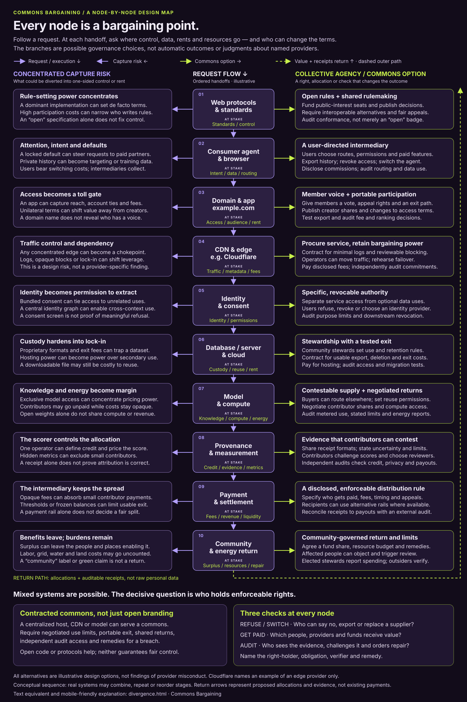

Ten handoffs. A choice at each one.

- ↓ Central solid arrows: request / execution order
- ← Left branches: possible concentrated capture
- → Right branches: possible commons governance
- ↑ Dashed outer arrow: value + receipts return, not raw personal data
Branches are choices, not two simultaneous traffic pipes. The return path is a proposed allocation and accountability loop, not a claim that payments already happen at these stages. Receipts document a claim; they do not by themselves establish correct attribution.
Mixed systems can serve a commons.
A centralized host, CDN, payment service or model can serve collectively governed goals under a governance contract. Public or cooperative ownership is another option, not a prerequisite for every component.
Open branding is not an enforceable condition. An open protocol, downloadable dataset or open model can still leave control, compute, money and exit costs concentrated.
For each proposed condition, name the right-holder, obligated party, observable evidence, independent verifier and remedy for failure. Treat an untested promise as a proposal, not an achieved safeguard.
Ask three questions at every node.
- Who can refuse or switch? Can users, members or their stewards decline an optional use, export usable data, replace a supplier or challenge a decision? What costs or limits remain?
- Who gets paid? Name the providers, workers, creators, contributors, stewards and community funds receiving each share. Specify fees, timing and allocation rules.
- Who audits? Give a named, sufficiently independent reviewer access to evidence, with privacy protections, a challenge process and a route to repair.
The test: a right that can be exercised, a distribution that can be reconciled, and a breach that has consequences.
The complete text equivalent
The same ten stages in request order, with the asset at stake, the possible diversion, the commons alternative and concrete accountability questions. All conditions below are proposed design commitments, not statements about an existing service or legal guarantees.
-
Web protocols & standards
At stake: standards and rule-setting control.
Concentrated capture risk
A dominant implementation can set de facto terms. High participation costs can narrow who writes the rules. An “open” specification does not, by itself, distribute control.
Collective agency / commons option
Fund public-interest participation, publish decisions, require interoperable alternatives and provide fair appeals. Evaluate conformance rather than accepting an “open” badge.
Rights, returns and audit
Refuse/switch: implementers and users can choose compatible implementations. Paid: funded participation and maintenance have disclosed budgets. Audit: an independent reviewer checks conformance, representation and the appeal process.
-
Consumer agent & browser
At stake: intent, personal data and request routing.
Concentrated capture risk
A locked default can steer requests toward paid partners. Private history can become targeting or training data. Users bear switching costs while intermediaries collect commissions.
Collective agency / commons option
Let users choose routes, permissions and paid features; export history; revoke access; and replace the agent. Disclose commissions and inspect routing and data use.
Rights, returns and audit
Refuse/switch: users decline optional uses and move to another agent with a usable export. Paid: service fees and referral commissions are visible. Audit: an independent reviewer tests defaults, routing records and permission enforcement.
-
Domain & application: example.com
At stake: access, audience relationships and platform rent.
Concentrated capture risk
An application can capture reach, account ties and fees. Unilateral terms can shift value away from creators. A domain name does not reveal who has a voice.
Collective agency / commons option
Give members a vote, appeal rights and a practical exit path. Publish creator shares and changes to access terms. Test account exports and audit fee and ranking decisions.
Rights, returns and audit
Refuse/switch: members challenge terms or leave with portable records. Paid: creators and app operators receive disclosed shares. Audit: member-appointed independent reviewers inspect allocations, ranking rules and usable export.
-
CDN & edge: Cloudflare as an illustrative provider
At stake: traffic control, metadata and infrastructure fees.
Concentrated capture risk
Any concentrated edge can become a chokepoint. Logs, opaque blocking or lock-in can shift bargaining power. This is a generic design risk, not a finding about Cloudflare.
Collective agency / commons option
Procure a service without surrendering governance. Contract for minimal logs and reviewable blocking. Retain the ability to move traffic and rehearse failover.
Rights, returns and audit
Refuse/switch: authorized operators can reroute traffic and challenge blocks under agreed procedures. Paid: edge providers receive disclosed service fees. Audit: an independent reviewer verifies logs, commitments, invoices and failover tests.
-
Identity & consent
At stake: identity linkage and authority to use data.
Concentrated capture risk
Bundled consent can tie access to unrelated uses. A central identity graph can enable cross-context use. Displaying a consent screen does not prove that refusal is meaningful.
Collective agency / commons option
Separate service access from optional data uses. Make permission specific and revocable. Allow users to refuse, revoke or choose a different identity provider; verify purpose limits downstream.
Rights, returns and audit
Refuse/switch: users can decline optional uses without losing unrelated access and choose compatible identity services. Paid: disclose identity-service fees; do not treat payment as blanket consent. Audit: privacy reviewers test purpose limits and downstream revocation.
-
Database, server & cloud
At stake: data custody, reuse rights and hosting rent.
Concentrated capture risk
Proprietary formats and exit fees can trap a dataset. Hosting power can become power over secondary use. Even a downloadable file may remain costly or impractical to reuse.
Collective agency / commons option
Community stewards set use and retention rules. Contract for usable exports, deletion and predictable exit costs. Pay for hosting while keeping custody and reuse decisions accountable.
Rights, returns and audit
Refuse/switch: authorized stewards can reject secondary use and migrate under tested procedures. Paid: hosting and stewardship fees are specified. Audit: an independent reviewer checks access records, deletion evidence and migration tests.
-
Model & compute
At stake: knowledge, compute access, energy use and model revenue.
Concentrated capture risk
Exclusive model access can concentrate pricing power. Contributors may go unpaid while costs remain opaque. Open weights alone do not share compute or revenue.
Collective agency / commons option
Make supply contestable: buyers can route to alternatives and set reuse permissions. Negotiate contributor shares and shared compute access. Report metered use, limitations and energy consumption.
Rights, returns and audit
Refuse/switch: buyers can replace models; contributors have specified reuse choices before use. Paid: contracts name compute providers and eligible contributor shares. Audit: independent reviewers inspect use, payout and energy evidence, including estimation limits.
-
Provenance & measurement
At stake: credit, evidence, scoring power and allocation metrics.
Concentrated capture risk
One operator can define credit and price the score. Hidden metrics can exclude small contributors. A receipt alone does not prove that attribution is correct.
Collective agency / commons option
Use shared receipt formats; disclose uncertainty and limits. Let contributors contest scores and choose reviewers. Independent checks examine credit, privacy and resulting payouts.
Rights, returns and audit
Refuse/switch: contributors can challenge a score and seek an alternative reviewer. Paid: contributor allocations and measurement-service fees are distinct and visible. Audit: independent reviewers access sufficient evidence without unnecessary personal-data disclosure.
-
Payment & settlement
At stake: fees, revenue shares and access to usable balances.
Concentrated capture risk
Opaque fees can absorb small contributor payments. Thresholds or frozen balances can make exit impractical. A payment rail does not, by itself, determine a fair split.
Collective agency / commons option
Specify an enforceable distribution rule: recipients, fees, timing and appeals. Offer alternative rails where available. Reconcile receipts with actual payouts through an external audit.
Rights, returns and audit
Refuse/switch: recipients can challenge settlement and choose eligible alternative rails, with constraints disclosed. Paid: creators, workers, providers and funds have named shares. Audit: an external financial reviewer reconciles allocations, deductions and transfers.
-
Community & energy return
At stake: surplus, labor, energy, water, land and repair.
Concentrated capture risk
Benefits can leave the people and places enabling a system while labor, grid, water and land costs go uncounted. A “community” label or green claim is not an actual return.
Collective agency / commons option
Agree a community-governed fund share, resource budget and remedies. Give affected people a way to object and trigger review. Elected stewards publish spending while outside reviewers verify it.
Rights, returns and audit
Refuse/switch: affected people can trigger review and agreed limits or stop conditions. Paid: named local beneficiaries, workers and community funds receive agreed returns. Audit: independent financial and resource reviewers check spending, burdens and repairs.
Close the loop: return value allocations and auditable receipts to the people and institutions entitled to them at earlier stages. Minimize personal data in that evidence. An open interface, a receipt or a benefit promise only becomes useful bargaining power when someone can exercise a right, verify performance and obtain a remedy.